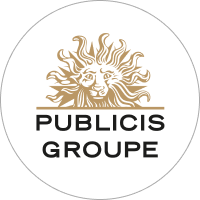

Curriculum Vitae
James Chu Per Sheng

Detail-oriented, data-driven account manager with exceptional soft skills to connect and understand the needs of clients. Looking for opportunities to delve deeper into product management. My systematic approach to problem-solving in areas of business development, product management and analytics enables me to effectively implement business strategies to drive organic growth and brand awareness. Clients include: Maybank, Sanofi, UOB, TM, L’Oreal and Nestlé.
|  |
Account Manager, Publicis GroupeApril 2019 - PresentIn charge of managing clients’ product development across various industries (e.g. finance, pharmaceutical, telecommunications and FMCG). Key responsibilities include understanding customer requirements, transforming them into actionable items and managing delivery of multi-disciplinary teams to said requirements.
|
Branch Executive, Malayan Banking BerhadOctober 2016 - April 2019
|
Account Management |
⭐⭐⭐⭐ |
Jira/Confluence |
⭐⭐⭐ |
Figma |
⭐⭐⭐ |
|||
Data Analysis |
⭐⭐⭐⭐ |
Python |
⭐⭐⭐ |
Strategic Planning |
⭐⭐⭐ |
|||
SQL |
⭐⭐⭐⭐ |
HTML/CSS |
⭐⭐⭐ |
Project Management |
⭐⭐⭐ |
UCL Provost's Excellence ScholarshipAugust 2013Received a scholarship of £1,000 for achieving three A stars (A*) in their qualifying A2 Levels - GCE A-Level |
|
Public Service Department of Malaysia (PSD) ScholarshipAugust 2013Awarded scholarship to pursue an undergraduate degree in psychology after receiving an unconditional offer from UCL in fulfillment to the PSD’s requirements. |
|
Outstanding Cambridge Learner Awards – Awarded by the Cambridge International Examinations (CIE)March 2013Recipient for Top in Malaysia for Psychology (AS-Level). Recipient for Top in Malaysia for Mathematics (AS-Level). |
|
Ministry of Education Malaysia Bursary ProgramMarch 2012Awarded Bursary to pursue A-Levels after obtaining 9A+ in the Sijil Pelajaran Malaysia (SPM) examinations. |
Bacher of Science, PsychologyUpper Class HonoursGraduated from University College London, UK in 2016 |